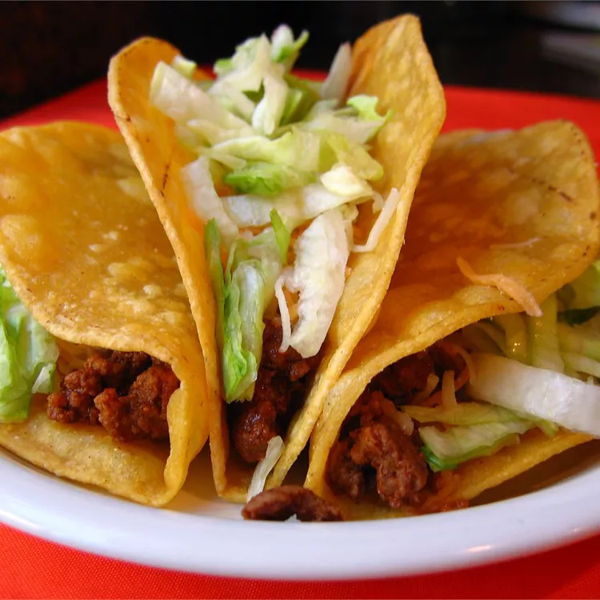

Tacos

Description
Crunchy and soft tacos make a great couple. The soft taco, layered with a mixture of refried beans and cheese, act as a cushion to keep the crunchy taco shell, filled with taco meat and toppings, from breaking. It's fun for kids and adults, too! This recipe is versatile and toppings are a matter of preference. We prefer shredded cheese, sour cream, lettuce, hot sauce, and sometimes guacamole. Enjoy!
Ingredients
- 1 pound ground beef
- Half of an onion, chopped
- 1 package dry taco seasoning mix
- 3 quarter cup water
- 4 ounces cheese, cubed
- 10 (6 in) flour tortillas, warmed
- 10 crip taco shells, warmed
Steps
- Cook ground beef and onion in a skillet over medium heat until beef is completely browned, 7 to 10 minutes. Drain excess grease from the skillet.
- While beef cooks, stir taco seasoning mix into water in a small saucepan; bring to a boil, reduce heat to low, and simmer for 10 minutes.
- Stir taco seasoning mixture into ground beef and onion mixture; simmer on medium-low heat while preparing the remaining ingredients.
- Stir refried beans and cubed process cheese food together in a separate small saucepan over medium-low heat; cook and stir until cheese food has melted completely into the beans, about 10 minutes.
- Divide refried bean mixture between flour tortillas; spread into an even layer to cover one side completely.
- Wrap tortillas around the crisp taco shells, using bean mixture to stick the tortillas to the shells.
- Spoon seasoned ground beef into the taco shells.